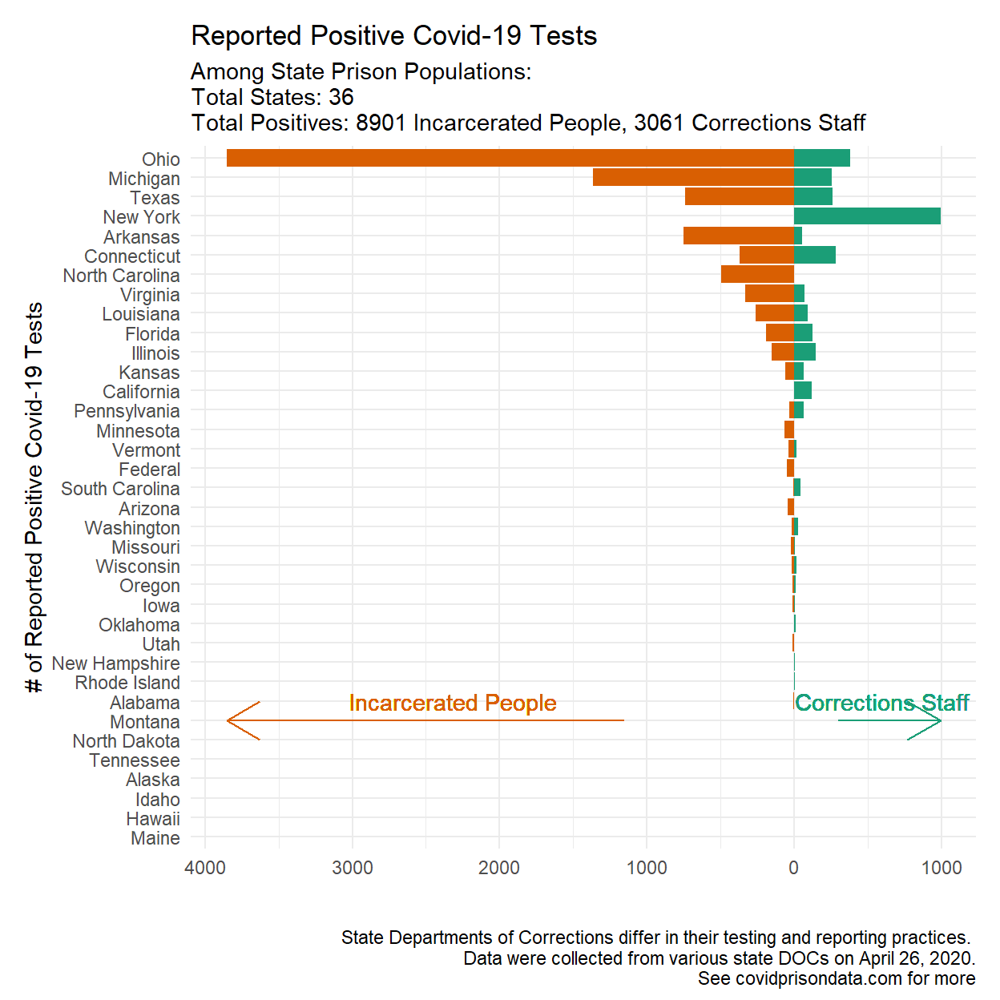

On April 10, a team of data scientists, criminologists, and law professors began a concerted effort to gather data to learn more about how incarcerated people and correctional staff are being affected by Covid-19. High-quality data are critical to provide transparency so advocates, experts, and government officials can be informed by the best information available. Here, data produced by states are integrated into one resource to facilitate access, a comparative perspective, and analysis. This is a work in progress and we appreciate feedback and suggestions.
While we have made every effort to ensure that the information scraped is accurate and updated every day, there are the following caveats. First, not all state DOC’s update their information every day or even every business day. As a result, while the scraper for data pertaining to Covid-19 is run daily, the data retrieved by the scraper may not reflect daily changes. We have endeavored to mark those departments that indicate they do not update their dashboards daily.
This site offers the following data (some states have less data available than the variables below):

Text and figures are licensed under Creative Commons Attribution CC BY 4.0. The figures that have been reused from other sources don't fall under this license and can be recognized by a note in their caption: "Figure from ...".